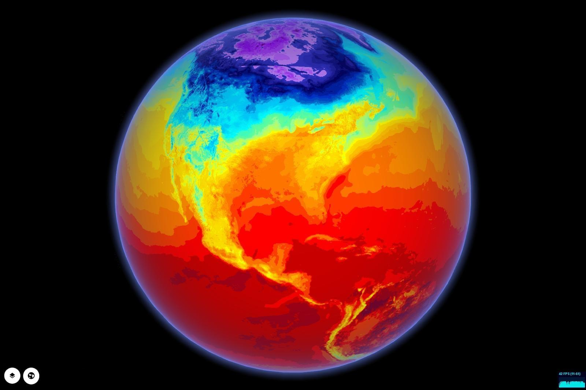
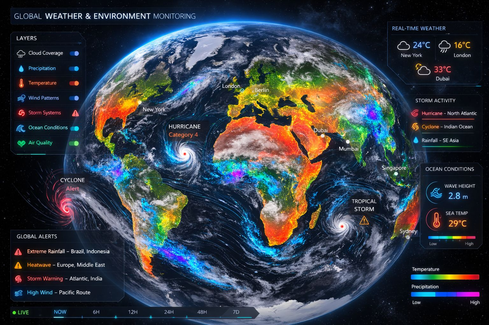
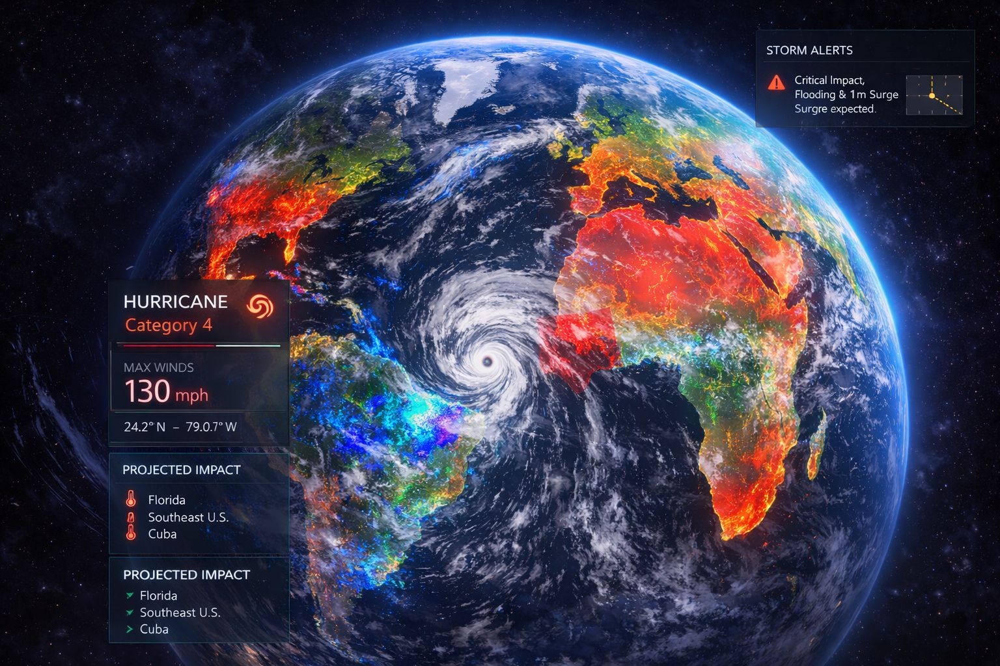
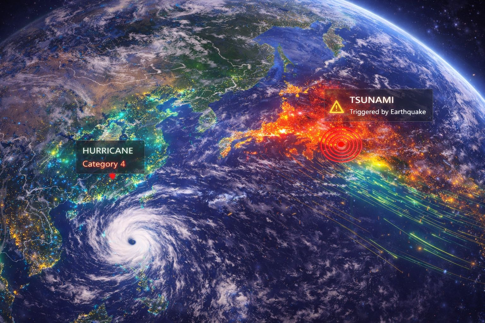

Weather Map & Meteorological Layers
Bring weather into every operational decision — as layers on the same globe your teams already use for assets and incidents.
Weather becomes actionable when it’s layered directly onto operations. GRIP 3D renders meteorological data—storm tracks, precipitation, wind, temperature, and alerts—over the same globe used for assets and networks. Teams can anticipate impact, coordinate response, and replay past events to improve planning. The platform supports adding new weather sources, regional models, and domain-specific thresholds via APIs.

Weather drives outages, delays, and safety issues — but it’s often viewed separately from assets. Teams lose time connecting the dots between a storm and its impact.
- Weather viewed in separate tools from assets
- Hard to anticipate operational impact zones
- No consistent timeline linking alerts to incidents
- Overlays not reusable across teams and regions
GRIP 3D treats weather as a first-class layer: radar, forecast, wind, lightning, and alerts overlay directly on your operational map with time playback.
- Weather overlays tied to assets, routes, and KPIs
- Forecast/time-slider playback to plan ahead
- Impact zones and alert polygons on the globe
- Reusable layer templates + partner APIs
Why this works at enterprise scale
Capabilities
- Orbital tracks and pass prediction overlays
- Beam footprint coverage & handover visualization
- Ground station / gateway health with alerts
- Telco layers: sites, sectors, outages, customer-impact
- APIs for partner data ingestion and layer publishing
Platform Views



Open for consulting and partner integrations
If you want this use case mapped to your data sources, we can deliver a fast prototype and integration plan — including layers, APIs, and deployment options.